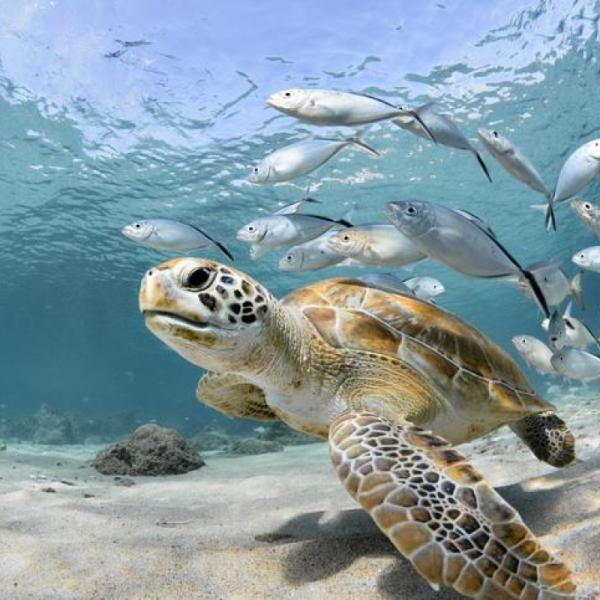

Les Tortues
Les Tortues (Testudines), ou Chéloniens, forment un ordre de reptiles dont la caractéristique est d'avoir une carapace. Il existe actuellement (décembre 2019) 343 espèces recensées possédant des caractéristiques diverses, mais toutes se distinguent des autres reptiles par une carapace qui est constituée d'un plastron au niveau du ventre et d'une dossière sur le dessus, reliés par deux ponts sur les côtés du corps. On les sépare traditionnellement en trois groupes : les tortues terrestres (environ 70 espèces), les tortues aquatiques, ou tortues dulçaquicoles (environ 260 espèces), et les tortues marines (7 espèces).